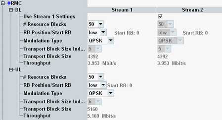

The parameters in this section configure a 3GPP-conform reference measurement channel (RMC) for non-eMTC tests.
To display these settings, select the scheduling type "RMC", see "Scheduling Type".
To configure the RMC, proceed as follows (for UL and DL):
Select the cell bandwidth (see "Physical Cell Setup").
If you want to use UL multi-cluster, enable it.
For LAA, select the partial subframe configuration and the burst type.
Select the number and position of allocated resource blocks (RB).
For UL multi-cluster, configure first cluster 1, then cluster 2.
Select the modulation type.
If you want to use UL 64-QAM, configure also "Enable 64-QAM UL Support".
If the transport block size index is configurable, select it.
For carrier aggregation scenarios, you can configure the settings per component carrier.

Only displayed for LAA with random transmission bursts.
- None, all subframes of a burst have full allocation.
- Initial subframes, the first subframe of a burst can have a partial allocation.
- Ending subframes, the last subframe of a burst can have a partial allocation.
- Initial and ending subframes, the first and/or the last subframe can have a partial allocation.
This parameter is visible if the selected transmission scheme involves several downlink streams.
If you enable this parameter, all stream 1 settings are also applied to stream 2.
If you disable this parameter, you can configure some DL parameters individually per stream. Other parameters are configurable for stream 1 only and are applied automatically to stream 2.
Remote command:Only displayed for LAA. Selects between fixed transmission bursts and random transmission bursts.
Remote command:Selects the number of allocated resource blocks. This parameter influences the allowed modulation types.
For multi-cluster allocation, this setting is configurable separately for cluster 1 and cluster 2.
Remote command:Plus corresponding PCC commands.
Some TDD RMCs defined by 3GPP have the same cell bandwidth, number of RBs, modulation type and transport block size index. The parameter "Version" is introduced to distinguish between these RMCs.
For the meaning of the version values, see "DL RMCs, Multiple TX Antennas (TM 2 to 6)".
Remote command:Selects the position of the first allocated resource block.
For multi-cluster allocation, this setting is configurable separately for cluster 1 and cluster 2.
Remote command:Plus corresponding PCC commands.
Selects the modulation type. This parameter influences the transport block size index.
256-QAM requires option R&S CMW-KS504/-KS554.
Remote command:Displays or selects the transport block size index, depending on the modulation type.
For most RMCs, the TBS index can be determined from the other settings and is displayed for information.
Only for few RMCs, the combination of the other settings is ambiguous and you can also select a TBS index.
For LAA, the value applies to subframes with full allocation.
Remote command:Displays the transport block size in bits.
Remote command:n/a
Displays the expected maximum throughput in Mbit/s (averaged over one frame). The value is calculated per downlink and uplink stream.
Remote command: